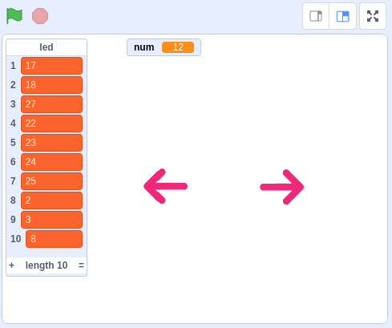
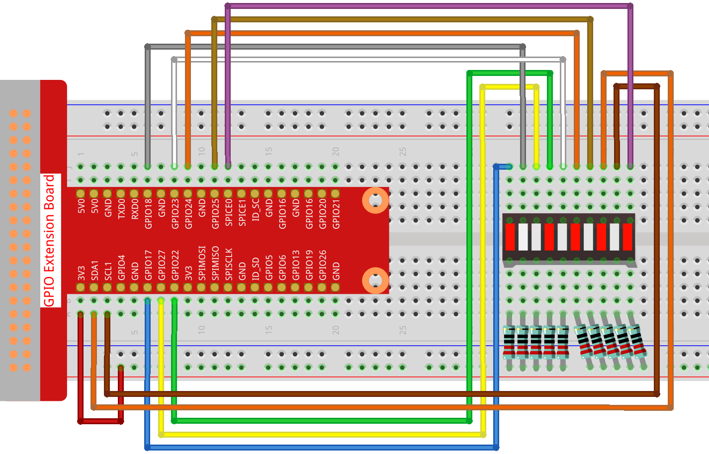
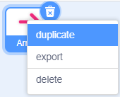
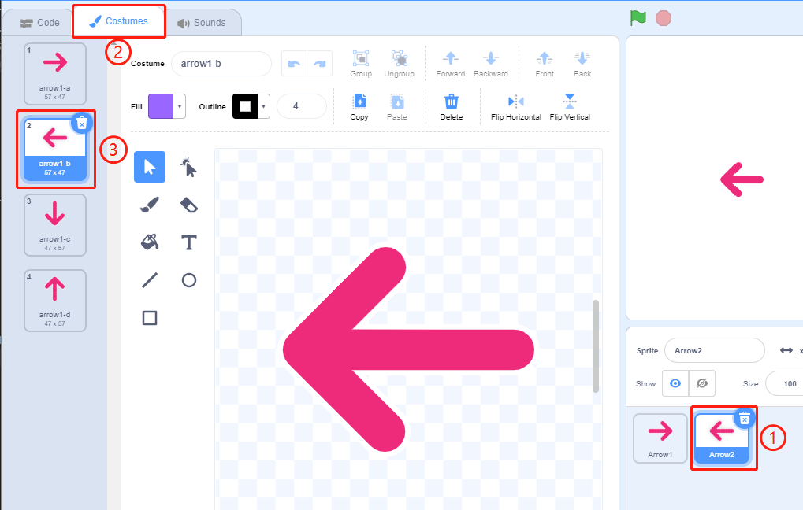
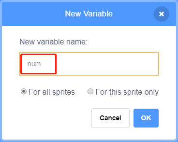
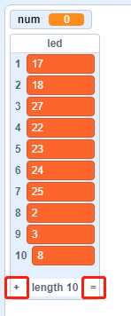
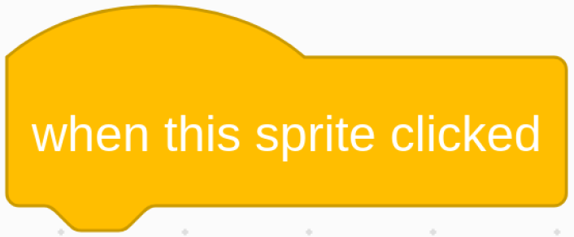
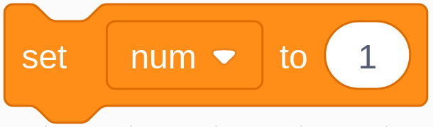
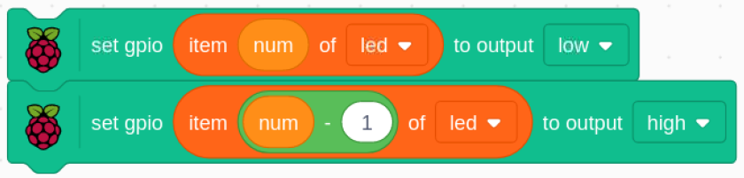

Note
Bonjour, bienvenue dans la communauté SunFounder pour les passionnés de Raspberry Pi, Arduino et ESP32 sur Facebook ! Plongez plus profondément dans l’univers du Raspberry Pi, d’Arduino et de l’ESP32 avec d’autres passionnés.
Pourquoi nous rejoindre ?
Support d’experts : Résolvez les problèmes après-vente et relevez les défis techniques grâce à l’aide de notre communauté et de notre équipe.
Apprendre & Partager : Échangez des astuces et des tutoriels pour améliorer vos compétences.
Aperçus exclusifs : Bénéficiez d’un accès anticipé aux annonces de nouveaux produits et aux aperçus en avant-première.
Réductions spéciales : Profitez de réductions exclusives sur nos derniers produits.
Promotions festives et concours : Participez à des tirages au sort et à des promotions spéciales pendant les fêtes.
üëâ Pr√™t √† explorer et cr√©er avec nous ? Cliquez sur [Ici] et rejoignez-nous d√®s aujourd‚Äôhui !
1.6 Lampe à Eau
Aujourd’hui, nous allons utiliser une barre de LED, un Raspberry Pi et Scratch pour créer une lampe à eau.
Les LEDs de la barre de LED s’allumeront dans l’ordre indiqué par les flèches sur la scène.
Composants Requis

Construire le Circuit
Charger le Code et Observer le Résultat
Chargez le fichier de code (1.6_water_lamp.sb3) depuis votre ordinateur dans Scratch 3.
En cliquant sur Arrow1, les LEDs de la barre s’allument une par une de la gauche vers la droite, puis s’éteignent dans le même ordre. En cliquant sur Arrow2, les LEDs s’allument dans l’ordre inverse.
Conseils pour les Sprites
Supprimez le sprite par défaut et choisissez le sprite Arrow1.

Nous aurons besoin de 2 sprites Arrow1, que vous pouvez dupliquer en utilisant le bouton de duplication.
Cliquez sur le sprite Arrow2 et modifiez la direction de la flèche en sélectionnant le costume 2.
Créons maintenant une variable.

Nommez-la num.
De la même manière, créez une liste appelée led.

Après ajout, vous devriez voir la variable num et la liste led s’afficher dans la zone de la scène.
Cliquez sur + pour ajouter 10 éléments à la liste et entrez les numéros de broches dans l’ordre suivant : (17,18,27,22,23,24,25,2,3,8).
Conseils pour le Code
{kind=link}
Ceci est un bloc d’événement déclenché lorsque le sprite actuel est cliqué.
{kind=link}
La valeur initiale de la variable num détermine quelle LED s’allume en premier.
Définissez la broche correspondant à num dans la liste led sur low pour allumer la LED, puis définissez la broche correspondant à num-1 sur high pour éteindre la LED précédente.